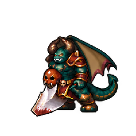
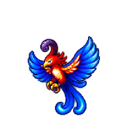

Atlas review, chưa kích hoạt runtime. Mở từng preview để chọn idle / move / attack / cast / hurt-down, nền sáng tối và replay. Kích thước 64/96/192 là toàn ô, chưa là kích thước thân đã chốt.
Vẽ sửa mắt/biểu cảm và pose cast; đóng atlas chuẩn. Cần kiểm tra playback và độ đọc khi scale.

Tạo hình và các hàng Idle / Attack / Cast / Down đã được owner chấp nhận. Move chưa đạt: bản bước cao bị từ chối; các lần sửa tiếp vẫn chưa đổi chân trụ đúng. Đang giữ bản nền, chưa có bản Move hoàn thiện.

Sửa hàng hurt/down để hai pose cuối thực sự nằm gục; giữ đầu đỏ, cánh xanh và crest tím.